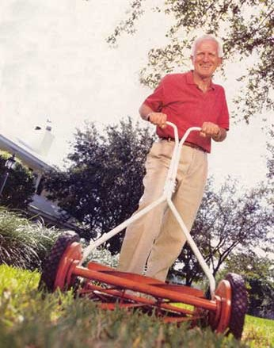

My dad figured out the perfect low-work, time-saving way to deal with mowing the grass: He made me do it. Since then I've had a love-hate relationship with my lawns. I don't enjoy mowing them any more now than I did when I was 13, but as soon as the grass gets the least bit shaggy, I feel the need to cut it.
The longer I put it off, the guiltier I feel, the more it calls and the more difficult the job becomes.
I could take a cue from my dad and hire a teenager, but I remember how I used to run the mower over rocks - gouging chunks of metal out of the cutting blade and sometimes bending the driveshaft - without thinking twice about it.
There's always the farmyard approach, fencing in the lawn and running horses, cows or sheep in there. But fencing is expensive, there are vet bills, shelter for winter, flies in the manure ...
Or I could plant zoysia grass. This stuff stays short but has the texture of a stiff-bristled scrub brush and is only green between the last and first frosts. Forget that. Some MOTHER readers are trying to lose their lawns and plant permaculture gardens, but for many of us, at least some lawn is a fact of life.
Besides, I remind myself, think of the advantages of real lawn grass. Even without fertilizers, weed killers and heavy irrigation, a neatly mown, low-care lawn gives your property an inviting, park-like look. And if you want to catch the clippings, they are magnificent additions to the compost pile, providing as much nitrogen as cow manure. Laid down thickly in the garden, clippings make weedproof paths. They also make fine, nutritious mulch for all kinds of vegetables. Farther out, you may have a meadow or an orchard that requires mowing only once or twice a year to keep down volunteer saplings, noxious weeds - such as giant ragweed, poison ivy or poison oak - and thorny customers like multiflora roses and greenbriar.
The beauty of a lawn or meadow, as well as the benefit of usable outdoor space, makes mowing worth the work. As with any chore, however, the right tool makes the job go easier. Let's look at the tools available and consider their merits, starting with the nonpolluting, human-powered options.
Reel Mowers: $100 to $225
Hand-pushed reel mowers offer multiple advantages over gas-powered mowers: no noise, no noxious air pollution, no danger of flying rocks, low maintenance and no worries about getting them started. Plus you get a great aerobic workout every time you use them, burning about 300 calories an hour.
The secret to easy cutting with these mowers is frequent mowing. If you let the grass get too long, the reel mower blades will tend to bind up or take an inordinate amount of pushing to get the mower through long grass. Cut when the grass is no more than an inch longer than you want it. A quarter acre (100 feet by 160 feet) of lawn can be cut in about an hour with a reel mower. For areas larger than that, you may want to go to a walk-behind, gas-powered cutter, either push or self-propelled.
Electric Mowers: $400 to $670
You can buy corded electric mowers that run directly off of your home's electricity, but keeping the cord out of the way as you mow is a challenge on all but the smallest lawns. On the other hand, cordless electric mowers offer the same advantages of reel mowers: less noise, pollution and maintenance than gas-powered machines, easy starting, plus a good workout. They are an especially green choice if you live where electricity comes from hydroelectric dams - rather than coal or nuclear power plants - or if you enjoy free electricity from your own home solar-electric system or wind generator.
Cordless electric mowers include batteries that have to be plugged into an outlet after each use to recharge. They generally are not self-propelled and tend to be heavy because of their batteries. If a small person will be using the mower, test drive it at the dealers.
Even greener than a cordless electric mower is the new Sunwhisper solar-charged mower. The Sunwhisper features two Siemens photovoltaic (PV) solar panels that charge a Black & Decker 24-volt, CMMI000 cordless electric mower. You can either mount the PV panels on your garage or shed roof, or mount them right on the handles of the mower. As long as the panels are facing south in full sun, they will keep the mower's battery charged for about two hours of mowing per week. If you need an overnight or cloudy-day charge, you still have the option to recharge by plugging into a home outlet.
The Sunwhisper solar-charged mower sells for $670 plus shipping from FreePowerSystems ( www.freepowersys.com ; (303) 651-3184). The Black & Decker 24-volt mower lists at $329.99.
Push-Type, Gas-Powered
Lawn Mowers: $150 to $350
You might ask why you'd want an engine-powered mower you have to push rather than one that's self-propelled. There are three reasons. First, the push mowers cost less. Second, while self-propelled mowers are fine on large lawns without many obstacles, the mower you push can be more easily guided through tight spaces, around trees and shrubs, and around island beds. Plus its forward or backward speed is your walking speed. Third, all but the most serious full-time homesteaders will benefit from a weekly aerobic workout behind a push mower.
Most mowers of this type have four- to six-horsepower engines. Avoid any that are underpowered, as they can stall in high grass and won't make as clean a swath. Look for engines with clean-burning, overhead valves, rather than side-valve engines. Make sure the mowing platform can be adjusted up to 4 inches off the ground. Weeds are suppressed and lawns are healthier when the grass is longer. Short-cropped grass exposes roots, and low mowers can hit rocks or scalp the soil over rough spots.
Self-Propelled, Gas-Powered
Lawn Mowers: $200 to $800
Self-propelled, gas-engine mowers reduce some of the physical work of mowing but cost somewhat more than push versions. If you decide to buy a self-propelled model, be aware of several factors that can affect their performance.
First, if you are planning to leave your clippings on the lawn, look for a mulching deck. This is simply a series of baffles and blades fixed to the underside of the housing that covers the rotating blade. When grass is cut, the baffles recirculate the grass clippings until they are reduced to fine mulch, which disappears quickly.
Many self-propelled mowers have safety features, such as a blade-brake-clutch. For the blade to operate, you have to hold a lever down as part of the handle. When you pause the unit or release the clutch lever, the blade stops automatically.
Some mowers offer a drive system that adjusts to your walking pace.
Denise Rubens of Rocky Ridge, Maryland, takes the issue of Earth-friendly mowing seriously - so seriously she uses two cordless battery-powered electric mowers to manage the needs of her 2-acre yard. Her large mowing area has steep hills with thicker grass in the spring, and this terrain pushes the limits of these mowers. However, she was determined to do the job without storing gasoline or creating harmful emissions.
Her first mower was the Black & Decker Cordless Mulching Mower, Model CMM625. Purchased four years ago, this mower offers a 3.5 horsepower engine, an 18-inch blade, and 12-volt lead/acid battery, which charges fully in 24 hours. On a single charge, the mower can cut up to 10,000 square feet, depending on the condition of the grass. However, Rubens had to stretch her mowing over several days in order to allow for recharging time. Despite this inconvenience, she continued to mow in this manner until she could upgrade. "When the mower gets tired, so do I," she says. (Cordless electric mowers generally are not self-propelled. )
Desiring more power, Rubens purchased Black & Decker's Model CMM1000 earlier this year. This upgraded model features across-the-board improvements. It offers a five-horsepower engine, a 19-inch cutting blade and a 24-volt battery, which can recharge in just 16 hours. The CMM1000 cuts a larger area on a single charge, about 19,000 square feet. This mower is bigger and heavier than the CMM625, but what it loses in maneuverability it makes up for in a shorter recharge time and slightly larger cutting swath.
"For areas where there is thick, wet crabgrass, the CMM1000 does the job," says Rubens. "On the other hand, the CMM625 is better on slopes because it's lighter and easier to manage. Both mowers have their strengths and weaknesses, and since I have both, I use them. My area is larger than average, but the CMM1000 can easily handle a modest-sized yard alone."
- Amy Krouse
Riding Mowers: $800 to $3,200
Big lawns require significant mowing time. Riding mowers have the great advantage of giving you a place to sit down while you spend that time. They are lighter and smaller than heavy-duty lawn and garden tractors, without the latter's features, such as power take-offs for snowblowing and tillage, and blades for grading. In effect, they are lawn mowers with seats.
Features to look for include a short turning radius, which can run from zero up to 26 inches. A turning radius is measured by steering the mower into the tightest circle it can make. The radius of that circle is the turning radius. A zero turning radius means you can stop the mower, turn the wheels and zip off in any new direction you choose. A short turning radius is handy for lawns with lots of obstacles, trees and flowerbeds.
Many riding mowers come with mulching decks, a good idea if you want to recycle your clippings back onto the lawn. The mulching deck will chop the clippings finely, so they disappear into the lawn. Make sure the riding mower has a powerful engine of at least eight horsepower, so it can lug you around the yard as well as cut the grass.
Brush Cutters: $750 to $1,600
For rough work - such as giving a meadow, orchard or wet spot a once-a-year mowing - there are plenty of brawny-bladed trimmers, high wheel mowers and brush cutters on the market.
Bladed trimmers are handhelds similar to string trimmers, but are sturdier. They usually have two handlebars, gas rn with one or two horsepower and metal blades that hack through brushy stems.
High wheel mowers and brush cutters come with plastic string or blades. String trimmers work well on light, juicy weeds and grass, but for getting through small shrubs and saplings, you'll probably want a bladed mower.
One Motor, Many Options
Starting from $1,100 to $1,600
Many homesteads need more power equipment than just a mower. Rather than buy a mower, tiller and snowblower, all with their own motors, gears and wheels, you might want to consider a machine that can run several attachments from the same engine. For example, the Italian BCS tiller is a quality machine offered by mail from Peaceful Valley Farm Supply ( www.groworganic.com ; (888) 784-1722). You can remove the tiller and attach a mower, brush cutter or snowblower to this machine. The DR Field and Brush Mower offers similar flexibility and efficiency. You can buy the brush mower, then add a lawn mower or snow thrower. The BCS tillers start at $1,100 and the DR starts at $1,600. If you have a need for multiple power equipment functions, why not talk to some of your neighbors and see if you can form a co-op to purchase and share this kind of machinery?
|
 The White LT1650 is Consumer Reports' Best Buy riding mower. |
Above is the DR Field and Brush Mower. Consumer Reports' Best Buys include Cub Cadet (below), White and Yard Man self-propelled models. |
|
|
|
|
|
|
|
|
|